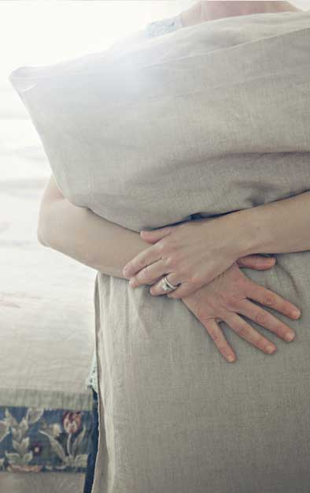
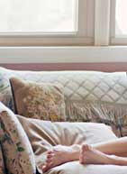
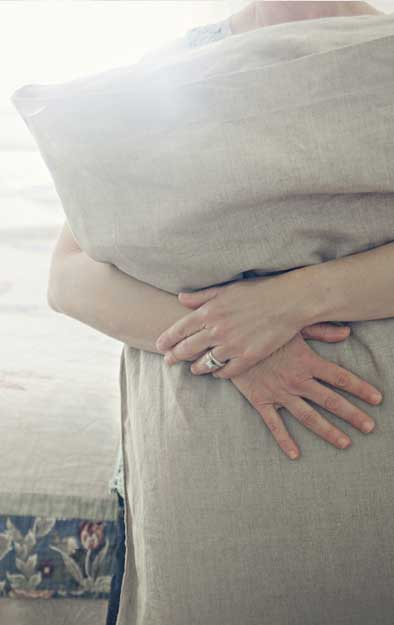
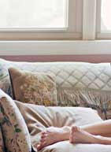
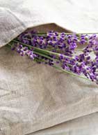
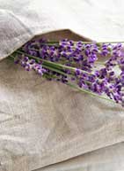

donna
 



I recently splurged on a purchase from Rough Linen. I ordered a simple pillow slip made from smooth linen fabric. The design of the pillow case is unique with a deep tuck to hold the pillow insert securely inside so it doesn’t show.
As a quilter, crafter, and seamstress, I am drawn to fabric, but not so much for the pattern, or even the color. What pulls me in is the feel, the texture, the drape of the fabric. The more natural and organic the better.
My new pillow slip brought sweet dreams to my sleep. I scented mine with fresh lavender. I am carrying my luxurious pillow with me all about the house. I propped up my feet to read and rested my head for a nap. And, when I ventured outside on a gorgeous almost summer day, I lay on a quilt with my head on the linen pillow cover and looked up at the sunlit sky. My heart is grateful.
Linen is a lesson in life for me. For years, I shied away from this seemingly troublesome fabric. I would iron and spray starch and try to force this fabric to behave properly. Within seconds after ironing, linen will go all wrinkly and wavy again. Finally, I came to accept the nature of linen and appreciate its beauty. I stopped fighting its natural properties and embraced this enduring fabric.
Learning to love linen is not unlike learning to love myself. I cannot iron or starch myself into a proper shape with perfect hair and faultless ways. I am perfectly imperfect. I hope you find a little luxury in your life. ~ Donna Hopkins
 
